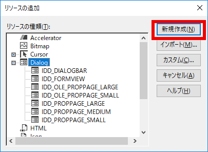

[作業用のディレクトリ]-|-[Assets] -|-[Libs] -|-[BaseCrossTool]
図1701a
この画面は単なるプレートが配置されている画面です。しかし、他のサンプルとは違ってウインドウ枠がありメニューもあります。
１、ダイアログボックスでオブジェクトの大きさと場所を指定 ２、OKボタンで画面上に球体を配置する
図1701b
ここからBaseCrossTol.rc－Dialogと下層に行って、Dialogを右クリックでリソースの追加を選びます。
図1701c
すると以下の様なダイアログが出るので新規作成をクリックします。

図1701d
すると以下の様なダイアログボックスの編集画面が出ます。
図1701e
リソースビューにあるIDD_DIALOG1というのはこのダイアログのIDです。これではわかりにくいので、編集用ダイアログの上で右クリックして、プロパティを開きます。
図1701f
IDD_ADDOBJECTに変更します。
図1701g
この要領でプロパティの下の方にCaptionという項目がありますのでオブジェクトの追加にします。するとダイアログのウインドウタイトルが変わります。
図1701h
これらのスタティックテキストは選択状態でプロパティのCaptionを変更すると文字列が変わりますので、そのようにして以下のように文字を変更しつつ配置しなおします。ダイアログのサイズも大きいので小さくします。
図1701i
続いて、入力を受け付けるエディットコントロールを配置します。ツールボックスからEdit Controlを選択し、以下のように配置します。
図1701j
図1701k
クラス名のところに記述すると、自動的にファイル名も決定されます。OKを押すと、CAddObjectDialogクラスが生成されます。
IDC_EDIT_SIZE m_Size IDC_EDIT_POSX m_PosX IDC_EDIT_POSY m_PosY IDC_EDIT_POSZ m_PosZ
図1701l
すると、CAddObjectDialogクラスに自動的に変数が追加されます。以下はヘッダ部です。
class CAddObjectDialog : public CDialogEx
{
DECLARE_DYNAMIC(CAddObjectDialog)
public:
CAddObjectDialog(CWnd* pParent = nullptr); // 標準コンストラクター
virtual ~CAddObjectDialog();
// ダイアログ データ
#ifdef AFX_DESIGN_TIME
enum { IDD = IDD_ADDOBJECT };
#endif
protected:
virtual void DoDataExchange(CDataExchange* pDX); // DDX/DDV サポート
DECLARE_MESSAGE_MAP()
public:
CString m_Size;
CString m_PosX;
CString m_PosY;
CString m_PosZ;
};
void CAddObjectDialog::OnBnClickedOk()
{
// TODO: ここにコントロール通知ハンドラー コードを追加します。
CDialogEx::OnOK();
}
void CAddObjectDialog::OnBnClickedOk()
{
UpdateData(TRUE);
// TODO: ここにコントロール通知ハンドラー コードを追加します。
CDialogEx::OnOK();
}
図1701m
ダブルクリックするとメニューの編集画面が表示されます。
図1701n
ここに入力という箇所がありますのでオブジェクト(&O)と入力します。
図1701o
ここで記入した(&O)は、ショートカットキーです。
図1701p
以下のようなダイアログが出ますので
クラスの一覧から、CBaseCrossToolAppを選択 関数ハンドラー名を、OnAddObject
図1701q
すると、自動的に
void CBaseCrossToolApp::OnAddObject()
{
// TODO: ここにコマンド ハンドラー コードを追加します。
}
#include "stdafx.h"
#include "afxwinappex.h"
#include "afxdialogex.h"
#include "BaseCrossTool.h"
#include "MainFrm.h"
#include "Project.h"
#include "CAddObjectDialog.h"
using namespace basecross;
void CBaseCrossToolApp::OnAddObject()
{
// TODO: ここにコマンド ハンドラー コードを追加します。
CAddObjectDialog dialog;
if (dialog.DoModal() == IDOK) {
;
}
}
//--------------------------------------------------------------------------------------
// class MoveSphere : public GameObject;
//--------------------------------------------------------------------------------------
class MoveSphere : public GameObject {
float m_Scale;
Vec3 m_Position;
float m_TotalTime;
public:
//構築と破棄
MoveSphere(const shared_ptr<Stage>& StagePtr,
const float Scale,
const Vec3& Position
);
virtual ~MoveSphere();
//初期化
virtual void OnCreate() override;
//操作
virtual void OnUpdate() override;
};
//--------------------------------------------------------------------------------------
// class MoveSphere : public GameObject;
//--------------------------------------------------------------------------------------
//構築と破棄
MoveSphere::MoveSphere(const shared_ptr<Stage>& StagePtr,
const float Scale,
const Vec3& Position
):
GameObject(StagePtr),
m_Scale(Scale),
m_Position(Position),
m_TotalTime(0.0f)
{}
MoveSphere::~MoveSphere() {}
//初期化
void MoveSphere::OnCreate() {
auto ptrTransform = GetComponent<Transform>();
ptrTransform->SetScale(Vec3(m_Scale));
ptrTransform->SetRotation(Vec3(0));
ptrTransform->SetPosition(m_Position);
//影をつける（シャドウマップを描画する）
auto shadowPtr = AddComponent<Shadowmap>();
//影の形（メッシュ）を設定
shadowPtr->SetMeshResource(L"DEFAULT_SPHERE");
auto ptrDraw = AddComponent<BcPNTStaticDraw>();
ptrDraw->SetMeshResource(L"DEFAULT_SPHERE");
ptrDraw->SetTextureResource(L"SKY_TX");
ptrDraw->SetFogEnabled(true);
ptrDraw->SetOwnShadowActive(true);
}
//操作
void MoveSphere::OnUpdate() {
auto elapsedTime = App::GetApp()->GetElapsedTime();
m_TotalTime += elapsedTime;
if (m_TotalTime >= XM_2PI) {
m_TotalTime = 0.0f;
}
auto ptrTransform = GetComponent<Transform>();
Vec3 pos = m_Position;
pos.x += sin(m_TotalTime);
ptrTransform->SetPosition(pos);
}
class GameStage : public Stage {
//リソースの作成
void CreateResourses();
//ビューの作成
void CreateViewLight();
//プレートの作成
void CreatePlate();
public:
//構築と破棄
GameStage() :Stage() {}
virtual ~GameStage() {}
//初期化
virtual void OnCreate()override;
//オブジェクト作成
void CreateMoveSphere(float Size, const Vec3& Pos);
};
//オブジェクト作成
void GameStage::CreateMoveSphere(float Size, const Vec3& Pos) {
AddGameObject<MoveSphere>(Size, Pos);
}
void CBaseCrossToolApp::OnAddObject()
{
// TODO: ここにコマンド ハンドラー コードを追加します。
CAddObjectDialog dialog;
if (dialog.DoModal() == IDOK) {
float size = (float)_tcstod(dialog.m_Size, NULL);
if (size <= 0.0f) {
AfxMessageBox(L"サイズは0以下にできません");
return;
}
Vec3 pos;
pos.x = (float)_tcstod(dialog.m_PosX, NULL);
pos.y = (float)_tcstod(dialog.m_PosY, NULL);
pos.z = (float)_tcstod(dialog.m_PosZ, NULL);
auto ptrStage = App::GetApp()->GetScene<Scene>()->GetActiveStage();
auto ptrGameStage = dynamic_pointer_cast<GameStage>(ptrStage);
if (ptrGameStage) {
ptrGameStage->CreateMoveSphere(size, pos);
}
}
}
図1701r
追加ボタンをクリックして、以下の画面になれば成功です。球体が行ったり来たりします。
図1701s